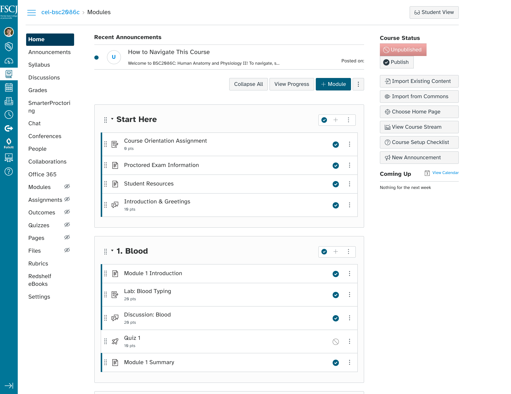
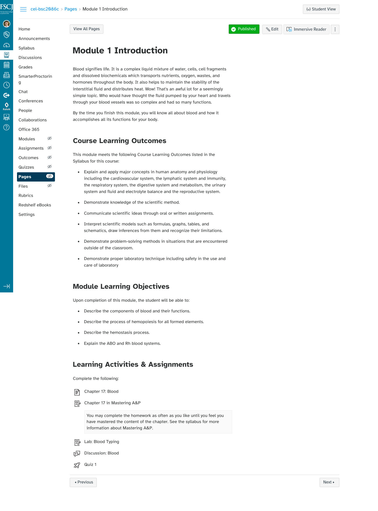

Global Styles for FSCJ’s Learning Management System (LMS)
Challenge
How might we create a hassle-free learning experience within the college’s LMS for our diverse users’ needs?
Process
This started primarily as a typography concern. FSCJ has a wide range of learners of different backgrounds and my teams places a large emphasis on accessibility and inclusion; to be empathic to their needs. We have learners whose English is not their first language, older learners who do not see as well as they used to, learners with cognitive concerns, such as dyslexia, and others, that make reading more difficult. So, we reached out to our leadership to begin asking the question: how many we improve the online learning experience for any learners using our LMS? How might we make sure learners can focus on the content, without anything getting in the way and taking them out of their learning flow?
-
This process began by analyzing the typeface used in our college’s style guide (Open Sans) and the typeface used in Canvas by default (Lato) against an accessibility matrix we drafted to check for readability. We did this because, currently, there are no set standards for which typefaces are considered to have high readability—although there are some, such as Arial, that are highly regarded. We found neither Open Sans or Lato reached hit our requirements. We presented these findings to leadership and faculty committees at the college and were given the greenlight to research other typefaces.
-
During this process, we aimed to adhere to the spirit of our college’s style guide and Canvas’s design system while knowing we would have to break out a bit to reach out accessibility standards. After going through numerous fonts, we found Atkinson Hyperlegible. Using this font, we found other style changes that we needed to implement to smooth together this new font within the existing LMS.
  -
Having found a typeface that provided a higher level of readability for our learners, we reached out to the college’s student support services department and the college’s vision education and rehabilitation center to get their expert feedback, working with learners with disabilities firsthand.
-
Our final step before being implemented is currently underway. We presented our style changes to faculty and there will be a full faculty senate vote on the change. If that is approved, these changes will go to the live server to aid learners in their online learning experiences.